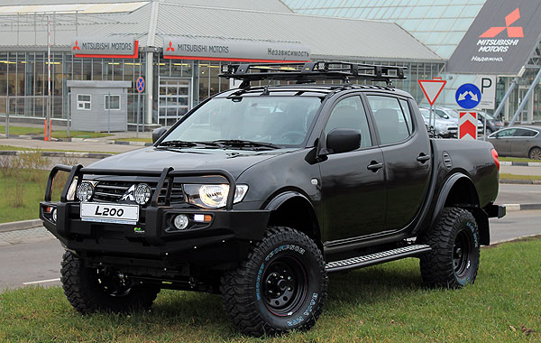
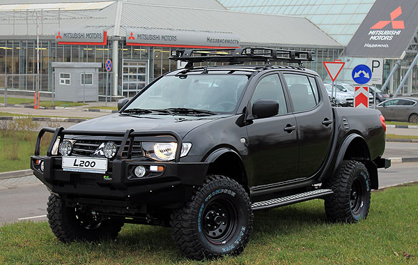
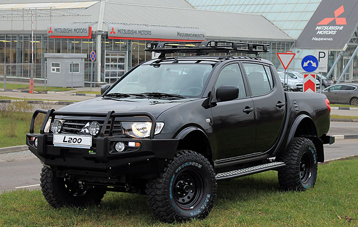
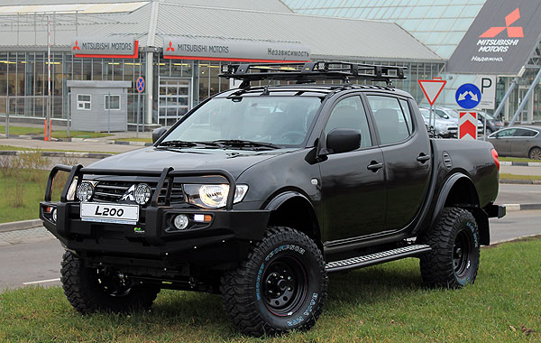

.jpg)
.jpg) 

.jpg)
.jpg) 

Пикап Mitsubishi L200 первого поколения был разработан японцами совместно с корпорацией Chrysler в расчете, прежде всего, на американский рынок. Дебютировавший в 1978 году автомобиль продавался в США под именами Dodge Ram 50, Plymouth Arrow Truck и Mitsubishi Mighty Max, а в Японии он был известен как Mitsubishi Forte. Автомобиль имел рамную конструкцию, двухместную кабину, неразрезной задний мост на рессорах; некоторые узлы и агрегаты пикапа были позаимствованы у «Галанта». Перованачально Mitsubishi L200 мог быть только заднеприводным, но после модернизации 1980 года у машины появилась полноприводная версия. На машину устанавливали бензиновые моторы 1.6, 2.0, 2.6, а также дизели объемом 2,3 литра.
Пикап второго поколения, производство которого началось в 1986 году, был разработан японцами уже самостоятельно, с использованием некоторых элементов конструкции предшественника. В модельном ряду появились версии с полуторной и двойной кабиной, расширился список опций, за доплату на машину начали ставить четырехступенчатый «автомат». «Второй» Mitsubishi L200 оснащался бензиновыми моторами 2.0, 2.4, 2.6 и V6 3.0, а также 2,5-литровыми дизелями. На японском рынке пикап назывался Mitsubishi Strada, в Австралии — Mitsubishi Triton, в США — Dodge Ram 50. В 1988 году автомобиль встал на конвейер завода в Таиланде, который впоследствии стал основным предприятием, выпускающим модель. С 1998 до 2007 года слегка видоизмененная версия модели выпускалась в Бразилии.
В 1996 году дебютировал совершенно новый Mitsubishi L200, по технике близкий внедорожнику Pajero. Позднее на базе пикапа был создан Mitsubishi Pajero Sport.
У автомобиля была новая кабина, интерьер и ходовая часть с самоблокирующимся дифференциалом в заднем мосту. Гамма силовых агрегатов состояла из бензиновых моторов 2.0, 2.4 и V6 3.0, а также дизелей объемом 2,5 и 2,8 литра. Коробки передач — пятиступенчатая «механика» или четырехступенчатый «автомат».
В Таиланде пикап третьего поколения выпускали до 2006 года, в Бразилии машину продолжали делать до 2012 года. С конца 1990-х годов Mitsubishi L200 официально продавался на российском рынке.